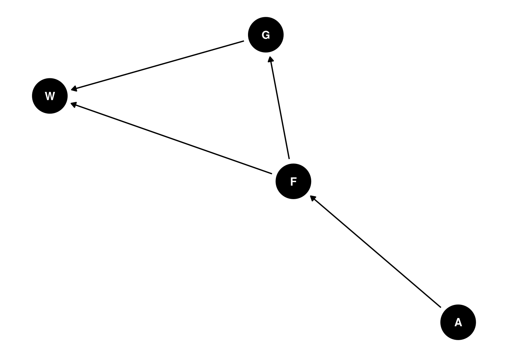
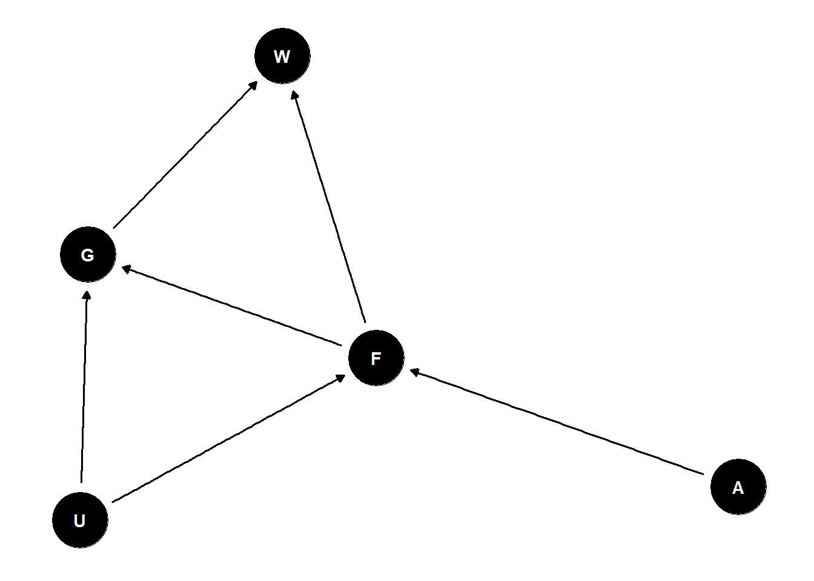
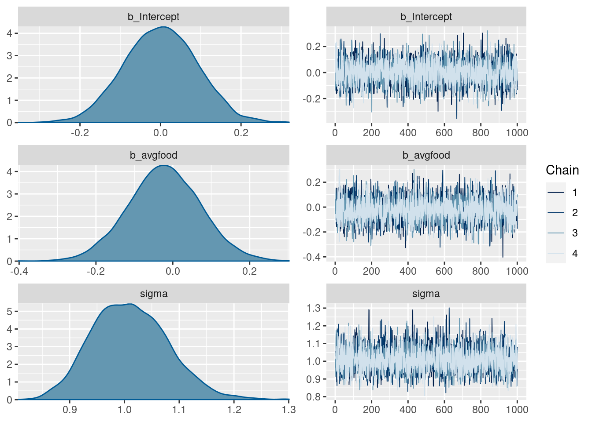
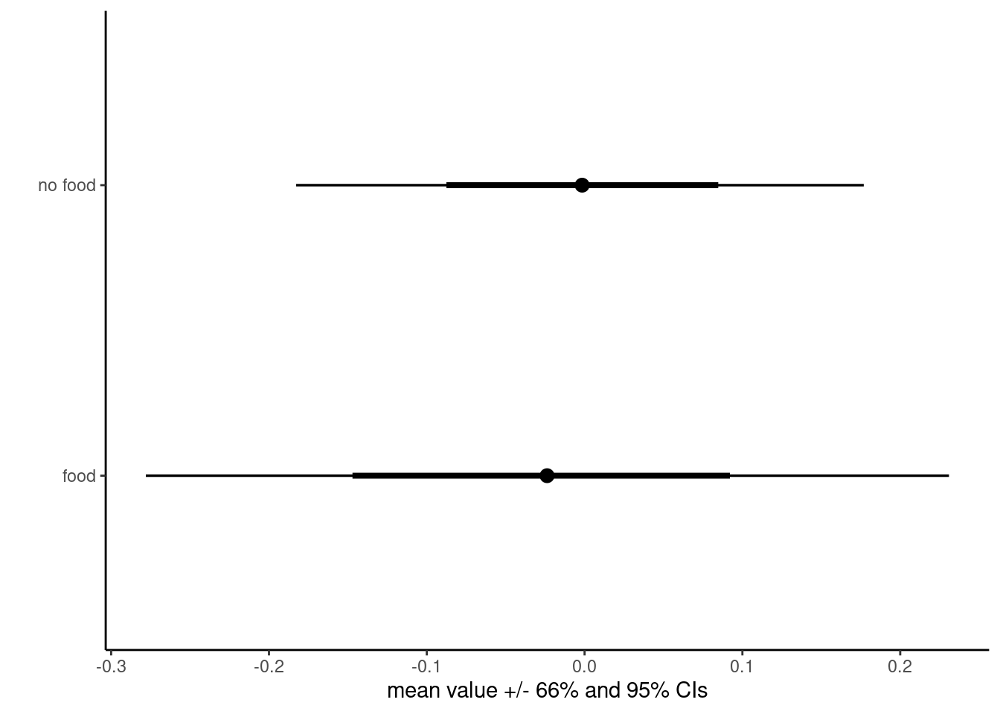
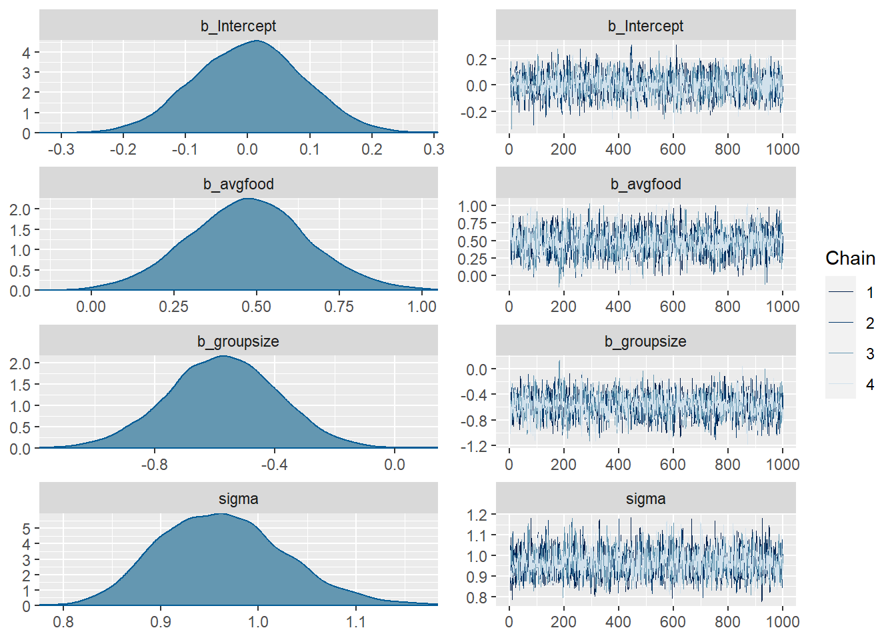
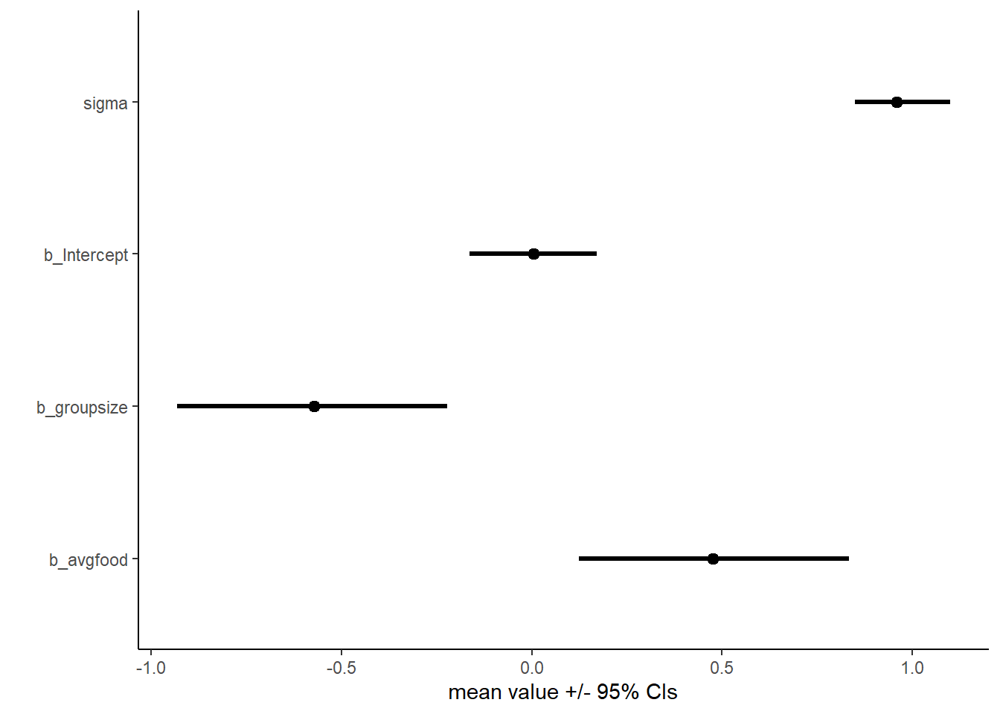
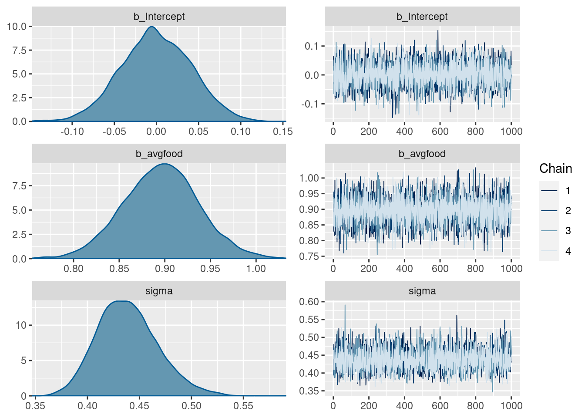
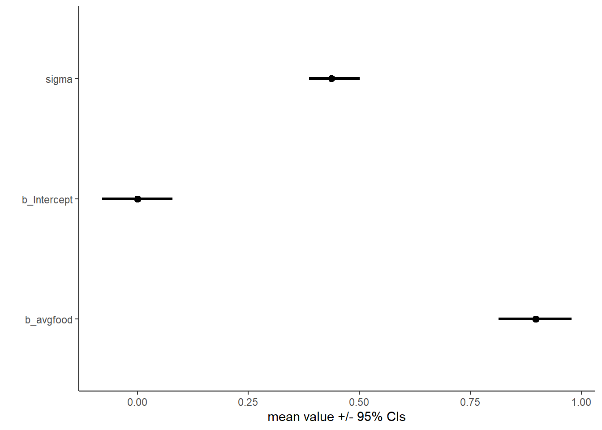
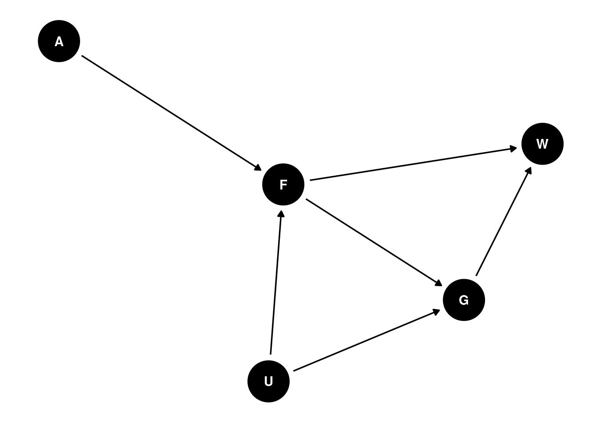

Homework - Week 03
Question 1: The first two problems are based on the same data. The data in data(foxes) are 116 foxes from 30 different urban groups in England. These fox groups are like street gangs. Group size (groupsize) varies from 2 to 8 individuals. Each group maintains its own (almost exclusive) urban territory. Some territories are larger than others. The area variable encodes this information. Some territories also have more avgfood than others. And food influences the weight of each fox. Assume this DAG:
where F is avgfood, G is groupsize, A is area, and W is weight. Use the backdoor criterion and estimate the total causa influence of A on F. What effect would increasing the territory have on the amount of food inside of it?
Total causal effect of A on F is just F ~ A.
# get data
data(foxes)
d <- foxes %>%
select(c(avgfood, area)) %>%
mutate(avgfood = standardize(avgfood),
area = standardize(area))
# get a list of priors present in the model
default_prior <- get_prior(avgfood ~ area, data = d, family = gaussian())
# load model
tar_load(h03_q1)
m1<- h03_q1
# model formula
m1$formulaavgfood ~ area # priors
m1$prior prior class coef group resp dpar nlpar lb ub source
normal(0, 0.5) b user
normal(0, 0.5) b area (vectorized)
normal(0, 0.5) Intercept user
exponential(1) sigma 0 user# check diagnostics
plot(m1)
# get a summary of posterior distribution
posterior_summary(m1) Estimate Est.Error Q2.5 Q97.5
b_Intercept 0.00180027 0.04424605 -0.08699153 0.08779513
b_area 0.87508681 0.04532430 0.78381207 0.96385458
sigma 0.47642964 0.03193351 0.41960619 0.54381478
lprior -2.46759468 0.15979059 -2.79675921 -2.15820677
lp__ -81.07429865 1.29904575 -84.42465769 -79.65751830# plot the effect
m1 %>%
gather_draws(b_Intercept, b_area, sigma) %>%
median_qi() %>%
ggplot(aes(y = .variable, x = .value, xmin = .lower, xmax = .upper)) +
geom_pointinterval() +
theme_classic() +
labs(y = "", x = "mean value +/- 95% CIs")
It looks like the effect of territory size on food availability is a strong positive relationship (remember to interpret this as standardized variables - so effect is stronger than it seems).
Question 2: Infer the total causal effect of adding food, F, to a territory on the weight W of foxes. Can you calculate the causal effect by simulating an intervention on food?
# get data
data(foxes)
d <- foxes %>%
select(c(avgfood, weight)) %>%
mutate(avgfood = standardize(avgfood),
weight = standardize(weight))
# get a list of priors present in the model
default_prior <- get_prior(weight ~ avgfood, data = d, family = gaussian())
# load model
tar_load(h03_q2)
m2<- h03_q2
# model formula
m2$formulaweight ~ avgfood # priors
m2$prior prior class coef group resp dpar nlpar lb ub source
normal(0, 0.5) b user
normal(0, 0.5) b avgfood (vectorized)
normal(0, 0.5) Intercept user
exponential(1) sigma 0 user# check diagnostics
plot(m2)
# get a summary of posterior distribution
posterior_summary(m2) Estimate Est.Error Q2.5 Q97.5
b_Intercept 6.834984e-04 0.09026490 -0.1761782 0.1706892
b_avgfood -2.153602e-02 0.09414535 -0.2049801 0.1656456
sigma 1.010654e+00 0.06928777 0.8865267 1.1533827
lprior -1.497178e+00 0.08130099 -1.6705898 -1.3623127
lp__ -1.670499e+02 1.25890208 -170.3416937 -165.6393421# simulate an intervention on food
# make empty df
simdf <- tibble(weight = double(),
avgfood = double(),
condition = character())
# sample W from data
n <- 1e3
sampW <- sample(d$weight, size = n, replace = T)
# make df where avgfood = 0
simdf_nofood <- simdf %>%
add_row(weight = sampW, avgfood = rep(0, n), condition = rep('no food', n))
# make df where avgfood = 1
simdf_food <- simdf %>%
add_row(weight = sampW, avgfood = rep(1, n), condition = rep('food', n))
# simulate model output when F = 0
epred_nofood <- simdf_nofood %>%
add_epred_draws(m2)
# simulate model output when F = 1
epred_food <- simdf_food %>%
add_epred_draws(m2)
# visualize contrast of intervention on food
epred <- as.data.frame(rbind(epred_nofood, epred_food))
ggplot(data = epred, aes(x = .epred, y = condition)) +
stat_pointinterval(.width = c(.66, .95)) +
theme_classic() +
labs(y = "", x = "mean value +/- 66% and 95% CIs")
We see that the total effect of food on weight is very slightly negative. Adding food would result in a small decrease in average weight. However, there is almost equal plausibility that it could be a positive effect as well and the effect is very small.
Question 3: Infer the direct causal effect of adding food F to a territory on the weight W of foxes. In light of your estimates from this problem and the previous one, what do you think is going on with these foxes?
To assess the direct causal effect of adding food on fox weight, we need to stratify by group size. This means simply adding group size to the model.
# get data
data(foxes)
d <- foxes %>%
select(c(avgfood, weight, groupsize)) %>%
mutate(avgfood = standardize(avgfood),
weight = standardize(weight),
groupsize = standardize(groupsize))
# get a list of priors present in the model
default_prior <- get_prior(weight ~ avgfood + groupsize, data = d, family = gaussian())
# load model
tar_load(h03_q3)
m3<- h03_q3
# model formula
m3$formulaweight ~ avgfood + groupsize # priors
m3$prior prior class coef group resp dpar nlpar lb ub source
normal(0, 0.5) b user
normal(0, 0.5) b avgfood (vectorized)
normal(0, 0.5) b groupsize (vectorized)
normal(0, 0.5) Intercept user
exponential(1) sigma 0 user# check diagnostics
plot(m3)
# get a summary of posterior distribution
posterior_summary(m3) Estimate Est.Error Q2.5 Q97.5
b_Intercept -1.290813e-03 0.08931639 -0.17236064 0.1769677
b_avgfood 4.729671e-01 0.18599490 0.09371001 0.8265943
b_groupsize -5.707044e-01 0.18681170 -0.93313280 -0.1968301
sigma 9.646206e-01 0.06488804 0.84658064 1.1065583
lprior -2.895702e+00 0.75889644 -4.70678173 -1.7899017
lp__ -1.629948e+02 1.44232128 -166.61982834 -161.1684968# plot
m3 %>%
gather_draws(b_Intercept, b_avgfood, b_groupsize, sigma) %>%
median_qi() %>%
ggplot(aes(y = .variable, x = .value, xmin = .lower, xmax = .upper)) +
geom_pointinterval() +
theme_classic() +
labs(y = "", x = "mean value +/- 95% CIs")
Once we stratify for group size, we see that the effect of food availability on weight is stronger, and positive. We also see that group size has a moderate negative effect on weight. The effect sizes are almost the same size, but in opposite directions. When calculating the total effect, the effect of group size may be masking the effect of food on fox weight.
Biological explanation: increases in territory size increase food availability (Q1) - but increases in food don’t affect fox weight. Is this effect being cancelled out by subsequent increases in group size? Can test causal model
# load model
tar_load(h03_q3b)
m3b <- h03_q3b
# model formula
m3b$formulagroupsize ~ avgfood # check diagnostics
plot(m3b)
# get a summary of posterior distribution
posterior_summary(m3b) Estimate Est.Error Q2.5 Q97.5
b_Intercept -1.491733e-04 0.04127697 -0.08049194 0.07950636
b_avgfood 8.959363e-01 0.04117644 0.81502122 0.97602255
sigma 4.386855e-01 0.02912356 0.38752297 0.50095616
lprior -2.502469e+00 0.14990467 -2.82347812 -2.22383426
lp__ -7.181795e+01 1.24592339 -75.01707671 -70.41421943# plot
m3b %>%
gather_draws(b_Intercept, b_avgfood, sigma) %>%
median_qi() %>%
ggplot(aes(y = .variable, x = .value, xmin = .lower, xmax = .upper)) +
geom_pointinterval() +
theme_classic() +
labs(y = "", x = "mean value +/- 95% CIs")
Average food has a strong positive effect on group size. More food = larger groups = negative/minimal effect on weight.
Question 4: Suppose there is an unovserved confound that influences F and G, like this:

Assuming the DAG above is correct, again estimate both the total and direct causal effects of F on W. What impact does the unobserved confound have?
Total effect: Impossible because to close backdoor path you need to stratify on G - then you are estimating the direct effect.
Direct effect: Stratify by G.